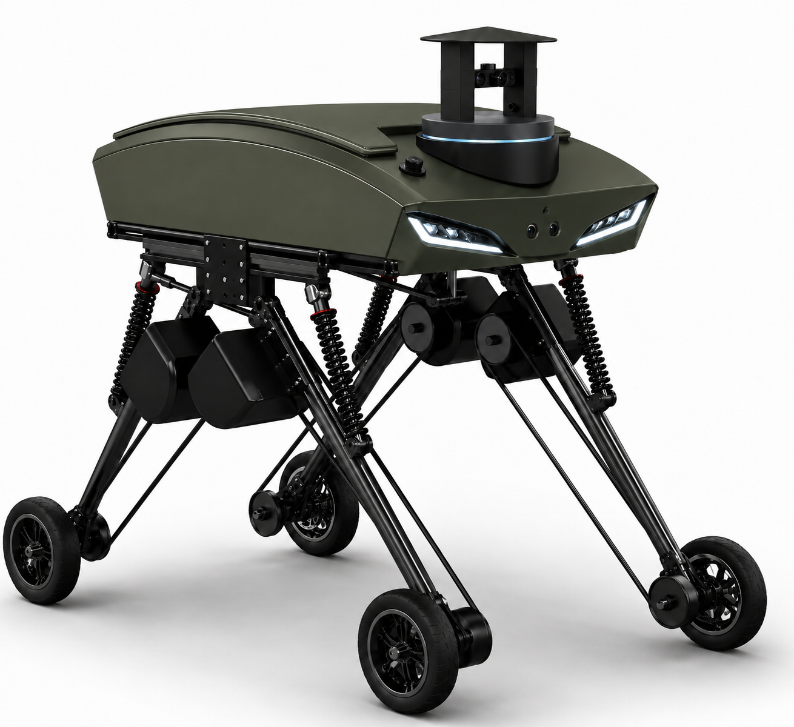

Güçlü Gövde
Saha koşullarına uygun, bakım ve geliştirme ihtiyacını düşünen gövde yaklaşımı.
Ana projemiz; üretilebilir, geliştirilebilir ve test edilebilir bir kara aracı mimarisi kurmak üzerine şekillenmektedir.

YEKTA UGV; mekanik dayanım, elektronik entegrasyon, kontrol yazılımı ve saha testlerini tek platformda birleştiren insansız kara aracı projemizdir.
Proje süreci; tasarım, üretim, entegrasyon, test ve iyileştirme döngüleriyle ilerler.
Saha koşullarına uygun, bakım ve geliştirme ihtiyacını düşünen gövde yaklaşımı.
Güvenli sürüş, frenleme ve görev senaryolarına uygun hareket kontrolü.
Gelecek geliştirmelere açık, değiştirilebilir ve ölçeklenebilir sistem yapısı.